Get Started
MyDB system provide a simple way to manage your data. Databases, tables and entities are easy to manage with this system.
Important- All Projects need to be running to use MyDB
- Swagger URL: Link
- Application URL: Link
Windows Configuration
MyDB instructions build&run for windows:
Backend:
1. Install .Net Core 3.1 SDK
2. Trust on .net certs, CMD command: dotnet dev-certs https –trust
3. Into %your_folder%/myDB/API run the project, CMD command: dotnet run --project Presentation/MyDB.csproj
FrontEnd:
1. Install NPM
2. Install angular CLI, CMD command: npm install -g @angular/cli
3. Into %your_folder%/myDB/Front, install all dependencies, CMD command: npm install
4. Into %your_folder%/myDB/Front, run the project, CMD command: npm run start
Redis:
1. Download Redis Portable
2. Run file redis-server.exe from download (Other installations need to use default configs instance: localhost:6379)
3. Accept Adm privileges
Obs. Clean all caches (control + F5) on system first start when get errors.
Linux/Mac Configuration
MyDB instructions build&run for Linux and Mac:
Backend:
1. Install .Net Core 3.1 SDK binaries
2. Trust on .net certs, CMD command: sudo dotnet dev-certs https –trust
3. Into %your_folder%/myDB/API run the project, CMD command: dotnet run --project Presentation/MyDB.csproj
Obs. .Net core download page show how to install SDK, ex:
mkdir -p $HOME/dotnet && tar zxf dotnet-sdk-3.1.408-linux-x64.tar.gz -C $HOME/dotnet
export DOTNET_ROOT=$HOME/dotnet
export PATH=$PATH:$HOME/dotnet
FrontEnd:
1. Install NPM
2. Install angular CLI, CMD command: sudo npm install -g @angular/cli
3. Into %your_folder%/myDB/Front, install all dependencies, CMD command: sudo npm install
4. Into %your_folder%/myDB/Front, run the project, CMD command: npm run start
Redis:
1. Download Redis (Other installations need to use default configs instance: localhost:6379)
2. Extract File, command: tar xvzf redis-stable.tar.gz
3. Into %your_folder%/redis-stable make Redis project, command: Make
4. Into %your_folder%/redis-stable, run redis server, command: ./src/redis-server
Obs. Clean all caches (control + F5) on system first start when get errors.
Tests
- To run tests, into %your_folder%/myDB/API run CMD command:
dotnet test /p:CollectCoverage=true
Results:
Tests output:
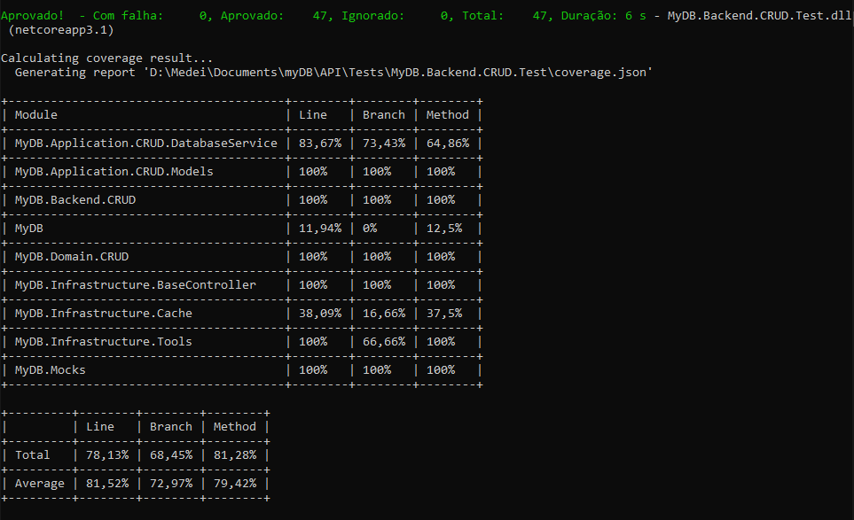Angular Services
DatabaseService:
// Create new full database using Dump data
createDatabaseByDump(database: Database): Observable<Database>
// Create new empty database
createDatabase(dbName: string): Observable<Database>
// Delete Database by Id
deleteDatabase(dbId: string): Observable<string[]>
// Get Dump by Id
getDump(dbId: string): Observable<Database>
// Get full database, with resolved references
getDatabase(dbId: string): Observable<Database>
// Get all Ids db from memory
getListDatabases(): Observable<string[]>
TableService:
// Create new full table using Dump data
createTableByDump(databaseId: string, table: Table): Observable<Table>
// Create new empty table
createTable(table: tablePayload): Observable<Table>
// Get full table, with resolved references
getTable(tableName: string): Observable<Table>
// Delete table by Id
deleteTable(dbId: string, tableId: string): Observable<Database>
EntityService:
// Create a new entity, using dbId + tableId
createEntity(entity: entityPayload): Observable<Table>
// Delete entity by Id
deleteEntity(dbId: string, tableId: string, entitiesId: number[]): Observable<Table>
Functions Interfaces:
export interface Database{
id: string;
name: string;
tables: Table[]
}
export interface Table {
id: string;
name: string;
displayedColumns: string[];
attributes: tableAttribute[];
entities: any[];
openState: boolean
}
export interface tablePayload {
databaseKey: string;
tableName: string;
attributes: tableAttributePayload[];
}
export interface entityPayload {
databaseKey: string;
tableKey: string;
entity: any;
}
APIs Endpoints
Open Swagger for more details
Create:
{GET} /Database/Create/db
{POST} /Database/Create/table
{POST} /Database/Create/entity
Query:
{GET} /Database/Query/listDBs
{GET} /Database/Query/dump
{GET} /Database/Query/fullDb
{GET} /Database/Query/fullTable
Delete:
{{DELETE}} /Database/Delete/db
{{DELETE}} /Database/Delete/table
{{POST}} /Database/Delete/entity/{dbId}/{tableId}
Functionalities
To use all functionaties, open myDB
Starter page application will provide multiples functionalities
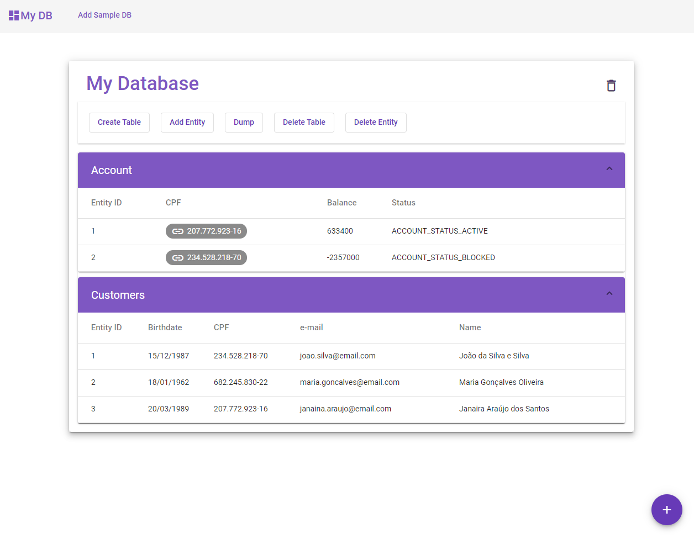Create Functionalities
User this header button to create a sample database with pre defined values
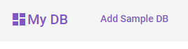Use + buttom on botton right page to create a new Database.
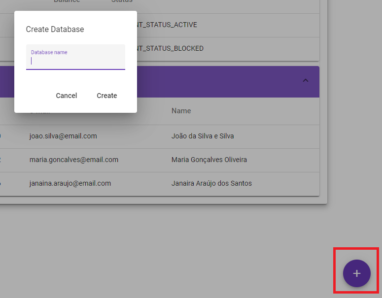Create table will provide a dynamic configuration to all attributes
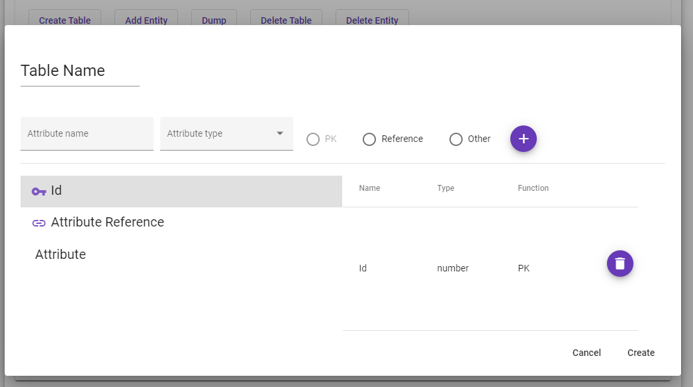Create entity provides a dynamic form using table selected attributes
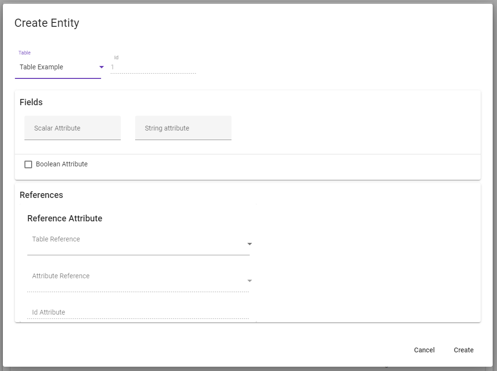Dump Functionalities
To use all functionaties, open myDB
Dump will provide a view Json from Database, with possibility to export all data
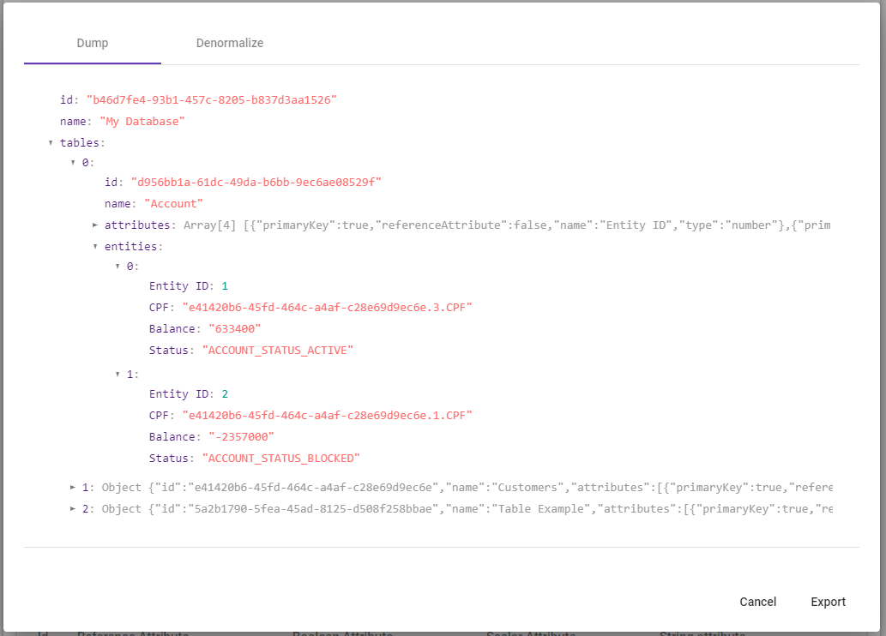Denormalize will provide a view Json from Database, with resolved references and possibility to export all data
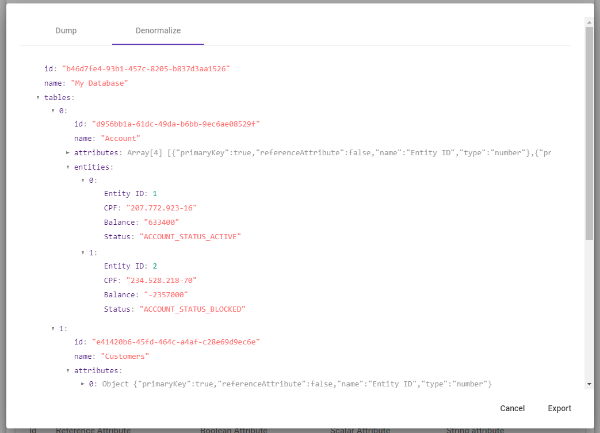Delete Functionalities
To use all functionaties, open myDB
Button on right top side provide a simple way to delete databases
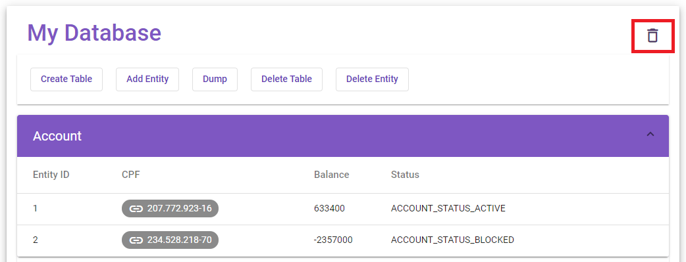Delete table based on selected by user
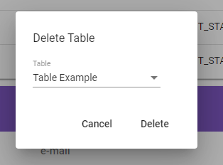Provide a multiple selectable list, based on selected table. Delete multiples lines at time
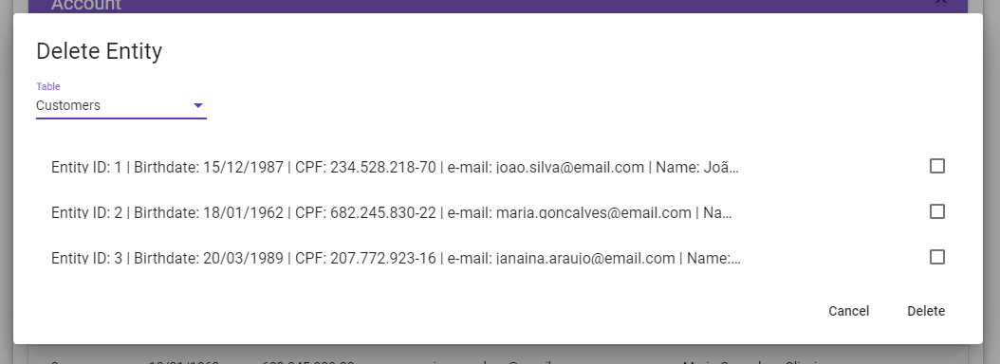